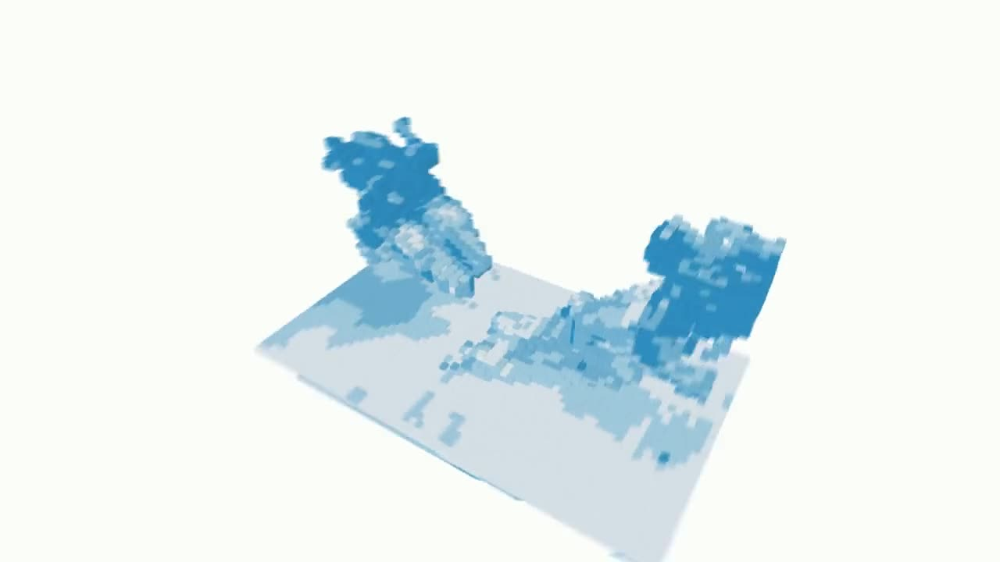

3D World Simulator
An action-conditioned world model that predicts in 3D. One predicted scene state gives 3D particles, spatially aligned tactile signals and consistent renderings from any viewpoint, interactively and over long horizons.
Affiliation · 2026
Contents
1Overview
We introduce 3D World Simulator, a multimodal world model that supports long-horizon interactions at 50+ FPS on an RTX 5090. Our approach involves a hybrid particle-voxel autoencoder and a 3D latent dynamics that utilizes a unified 3D representation space, providing a common interface for several important capabilities:
- Multi-view consistent renderingfrom novel viewpoints
- Flexible integrationof spatially-aligned tactile signals
- Generation of 3D particles
- Controllable variationin backgrounds and robot embodiments
3D World Simulator enables scalable data generation for policy training and evaluation using visuo-tactile and multi-view observations, including wrist-mounted and novel camera views. When trained on large-scale data, 3D World Simulator generalizes to diverse objects, enabling downstream model-based planning.
2Interactive demo
The cloth model runs on a GPU on Modal and streams its render to the browser. Press start and a container is started for you, which takes about 45 seconds the first time. Then move the arms with the keys below, or drag the handles that appear on the grippers. It is a research demo rather than a product: if you push the arms somewhere the training data never went, the cloth will look strange.

3Multimodal 3D Video Prediction
3D World Simulator supports diverse robot manipulation tasks, spanning deformable objects, articulated objects and in-hand manipulation. Pick a task below to see an open-loop rollout of the model: it is given a few real frames to start from and then runs on its own from the recorded actions. Because the prediction is 3D, the same rollout can be viewed in several ways: rendered from a novel viewpoint, as the predicted 3D particles with their tactile signal, as the intermediate voxel representation, and as the latent representation the dynamics model operates on.
4Controllable Variation in Backgrounds and Robot Embodiments
The 3D nature of our model makes it far more controllable and editable than 2D video prediction models. The base model does not rely on segmentation masks, but it can be fine-tuned to predict the manipulated scene on top of a separately captured background, so the prediction and the room become independent assets. This lets us place a rollout in different backgrounds and draw it with different robot embodiments, posed from the model's predicted joint states. And since the output is 3D Gaussians, existing relighting methods apply directly. Below, one box episode is carried through four scanned rooms, the first with the original arms and the rest with a pair of SO-101 arms, ending with four tasks side by side.
5Policy evaluation in the model
A policy can be run inside the model instead of on the robot: we render the camera views the policy expects, it returns an action, and the model predicts what happens next. The model's prediction is detailed enough to tell a success from a failure. For each task we picked one rollout that ends in success and one that does not. For Push-T the goal pose is drawn as an outline; for the cloth we look at whether the towel ends up folded. Plug insertion compares two different policies from the same start.
6Policies trained purely in the model
This one is real footage, not a render. The policies here were trained only on data produced by the world model and are running on the robot, sped up 20×.
7Scaling to diverse objects
Deform360 is the same kind of model trained on a collection of deformable objects (hats, plush toys, towels, ropes, sleeves). The camera starts on one object and pulls back to show the rest. All of them are predictions.
8Downstream planning
Since the model can imagine the result of an action sequence, we can plan with it: sample candidate sequences, roll each one out in the model, and execute the best. The objects here were not in the training data.
9Citation
@article{3dworldsimulator2026,
title = {3D World Simulator},
author = {...},
journal = {...},
year = {2026}
}